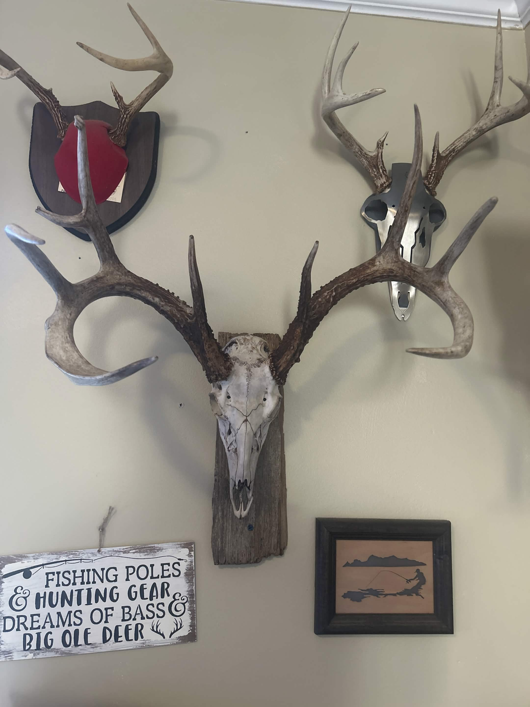

Selected work · Deer
Deer
skull mount.
A finished deer mount by Butler Creek Skull Works. Every piece is prepared with care and made to keep the memory of the hunt close. Optional name and date burn-ins are available for the mount plate.

Butler Creek Skull Works · Deer mount